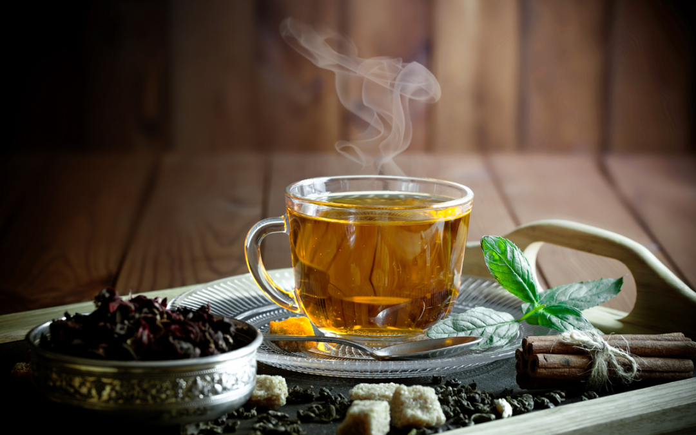
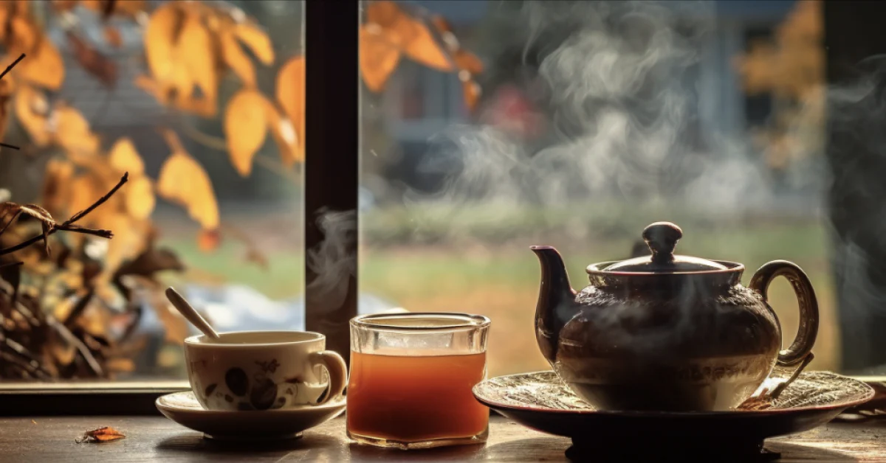

About Us | |
At Julie’s Teas, we believe every cup tells a story. Whether you're a seasoned tea lover or just beginning your journey,
we offer a world of flavors that will delight your senses. From rare, exotic teas sourced from the far corners of the globe
to beloved classics steeped in tradition, we have something for every palate. |
Exotic teas
|  | Julie’s Teas proudly offers a curated selection of rare and exotic teas from around the world. Each blend has been
carefully sourced from the finest tea-growing regions, bringing you a taste of adventure with every cup. Explore our
unique collection, which includes:
|
Our Timeless Tea Favorites
At Julie’s Teas, we believe some classics never go out of style. Our popular tea collection features familiar favorites that
have stood the test of time, bringing comfort and enjoyment with every sip. From rich, full-bodied black teas to soothing
herbal blends, these timeless teas are perfect for any occasion:
|  |
Contact us
We would love to have you:
Julie’s Teas
1249 Maple Grove Street
Hinton WV 24500
304-555-1212